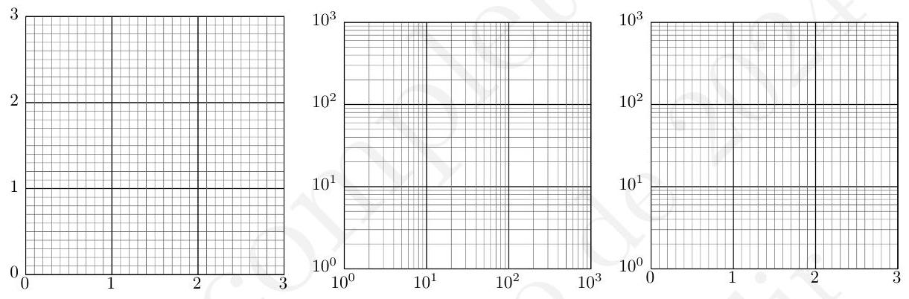
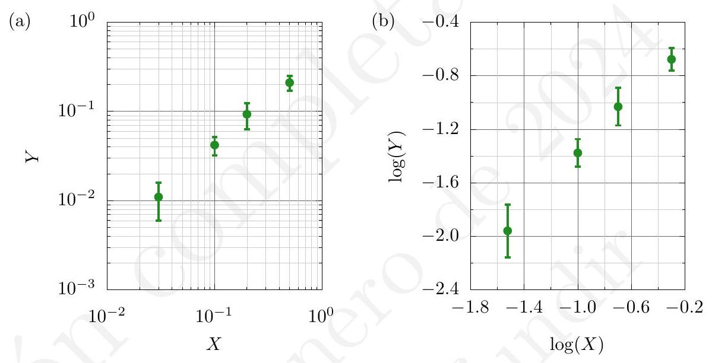

En muchos casos, el objetivo de las medidas es descubrir o comprobar una posible relación entre dos magnitudes físicas X e Y. En esta situación es conveniente emplear una gráfica, por ejemplo en coordenadas cartesianas rectangulares, en la que se representen las parejas de valores ( x_{j}, y_{j} ) cuyo análisis facilitaría el estudio de la mencionada relación.
Existen muchas otras formas de representar parejas de datos, que suele ser lo habitual en física. En caso de que tuviésemos más variables independientes, supongamos que dos, lo que se suele hacer es elegir una de ellas constante y representar la variable dependiente frente a la variación de la otra variable dependiente. De esta forma, podremos representar en una misma gráfica varias curvas.
En cada eje de una gráfica en coordenadas cartesianas rectangulares, es necesario especificar una relación entre las distancias sobre dicho eje y las diferencias de los valores de la magnitud física que se representan en dicho eje, es decir, es necesario definir una escala. En general el tipo de escala que se elige depende del rango de variación de los valores de la magnitud representada en cada eje. Por ejemplo, si una magnitud presenta valores que están todos dentro de un mismo rango lo más habitual es utilizar una escala lineal, en la que las distancias sobre el papel son proporcionales a las diferencias entre los valores de la magnitud. Sin embargo, si se tienen valores en rangos muy distintos (por ejemplo, algunos del orden de 1 y otros del orden de 1000) lo más habitual es recurrir a una escala logarítmica, en la que las distancias sobre el plano son proporcionales a las diferencias entre los logaritmos de los valores de la magnitud.
Teniendo en cuenta los dos tipos de escala mencionados, los tipos de gráficas más habituales son:
\log _{10} Y=\log _{10} \alpha+q \log _{10} X
Así, la gráfica sería una recta de pendiente q. El uso de la base 10 en la representación logarítmica se debe a que esta permite detectar las «décadas» (potencias de 10) directamente en la gráfica, tal como puede verse en la plantilla central de la figura 4.1. Cualquier otra base para el logaritmo no permitiría una lectura clara y rápida de los datos.
\log _{10} Y=\log _{10} A+\alpha^{\prime} X
donde \alpha^{\prime}=\alpha \log _{10}(e).

A la hora de representar una gráfica seguiremos las siguientes normas generales:
Las barras de error son una representación del intervalo de confianza en el cual puede encontrarse una magnitud dada. Su tamaño lo determina, justamente, el error asociado al punto que se esté representando. Este puede venir dado por la precisión del aparato (si es una única medida directa), la desviación típica, la dispersión, o el estimador del error que resulte más adecuado. El caso más sencillo es el de representar una única medida directa y_{i}, efectuada con un instrumento que arroja un error \Delta y_{i}. La representación del intervalo de confianza en la gráfica vendrá dada por un punto en la coordenada y_{i} con una barra de error que cubra el intervalo \left(y_{i}-\Delta y_{i}, y_{i}+\Delta y_{i}\right). En el caso de representar una medida indirecta, ya sabemos que el error se calcula por propagación (lineal o cuadrática). Y este es el error que debemos mostrar en las (valga la redundancia) barras de error. Así, si sabemos que una medida de tiempo t_{i} tiene un error \Delta t_{i} dado, los errores de t_{i}^{2} vendrán dados efectivamente por \Delta t_{i}^{2}=2 t_{i} \Delta t_{i}. La barra de error asociada a un punto t_{i}^{2} cubrirá entonces en el intervalo \left(t_{i}^{2}-2 t_{i} \Delta t_{i}, t_{i}^{2}+2 t_{i} \Delta t_{i}\right).
Una duda habitual que aparece en la representación de datos es cuando tenemos que usar barras de error en doble escala logarítmica, esto es, logarítmica en los ejes X e Y. Hemos de tener en cuenta que, si representa la barra de error del punto z=\log (y) mediante \log (y+\Delta y) y \log (y-\Delta y), la representación de los errores puede generar confusión, ya que que obtendremos unas barras de error que no serán simétricas en torno al punto z. Para representar las barras de error correctamente debemos usar propagación de errores en la cantidad z=\log (y), de forma que:
\Delta z=\left|\frac{d \log z}{d y}\right| \Delta y .
En el caso de que usemos logaritmos en base 10, que es lo habitual, tendremos:
\Delta z=\left|\frac{1}{y \ln 10}\right| \Delta y=\frac{1}{2,303} \frac{\Delta y}{y}=0,434 \frac{\Delta y}{y} .
En la figura 4.2 se muestra un ejemplo de lo comentado anteriormente. En la gráfica de la izquierda se representan unos datos con barras de error en escala doblemente logarítmica. Se aprecia que en esta escala las barras de error no aparecen equiespaciadas alrededor del punto, lo cual puede conducir a confusión. Si representamos en escala doblemente lineal al aplicar directamente logaritmos, y calculamos los errores correspondientes de acuerdo al método comentado anteriormente, tenemos la figura 4.2 b), en donde ahora sí las barras de error aparecen centradas en torno al punto.

El estudiante puede consultar un ejemplo concreto de este cálculo de errores en el tema 5, dedicado al desarrollo de ejemplos concretos de análisis de datos experimentales, en concreto en la ecuación 5.1. En ese tema, el estudiante podrá encontrar diversos ejemplos de representaciones gráficas realizadas de la manera adecuada. Como hemos mencionado, a menudo encontraremos que existen fundamentos teóricos que sustentan una relación subyacente entre las variables representadas. Para obtener experimentalmente, a partir de los datos obtenidos en el laboratorio, la relación entre ambas variables, utilizaremos el método de los mínimos cuadrados que se describe a continuación.
Consideremos un conjunto de N medidas de una pareja de magnitudes físicas X e Y de las cuales sospechamos que se encuentran relacionadas mediante una función lineal del tipo:
Y=m X+b
siendo nuestro objetivo encontrar la pareja de valores m, b que den lugar a la recta que mejor se ajuste a \operatorname{los} N datos experimentales.
Antes de dar más detalles acerca del método de ajuste para estos N datos experimentales, resulta conveniente recordar cómo es la expresión matemática de una recta cuando se conocen dos puntos en el plano por los que pasa dicha recta. Supongamos que disponemos de los puntos experimentales P_{0}=\left(x_{0}, y_{0}\right) y P_{1}=\left(x_{1}, y_{1}\right), la ecuación de la recta que une ambos puntos será:
y-y_{0}=\frac{y_{1}-y_{0}}{x_{1}-x_{0}}\left(x-x_{0}\right) .
Esta expresión, que es muy sencilla de recordar, es de gran utilidad para evaluar la pendiente mientras estamos midiendo para comprobar si nuestros datos tienen sentido o si hay algún error de algún tipo.
Como convenio, consideraremos la mejor recta como aquella para la cual la suma de los cuadrados de las desviaciones verticales de los puntos respecto de la recta sea mínima. Nótese que esto implica asumir (y esto no es más que un criterio) que los errores en la variable independiente son despreciables (esto es, \Delta x_{i}=0 ) y las medidas de x_{i} son por tanto exactas. Esto, en nomenclatura científica, equivale a realizar un ajuste de mínimos cuadrados por desviación vertical (vertical offset en inglés). Un tratamiento más riguroso (que es lo que ocurre en la realidad al medir en un laboratorio y queda fuera de los objetivos de este texto) requeriría asumir que la variable independiente también tiene un error asociado a la medida, por lo que deberíamos considerar la minimización en dirección perpendicular a la recta de mejor ajuste (desviación perpendicular; perpendicular offset).
Consideremos entonces una recta f(x)=y=m x+b (con dos parámetros ajustables m y b) que queremos obtener a partir de un conjunto de pares experimentales \left(x_{i}, y_{i}\right). Idealmente, querríamos que todos los puntos experimentales cumpliesen y_{i}=m x_{i}+b. Esta situación es difícilmente realizable a no ser que tratemos con modelos teóricos, por lo que exigiremos como criterio de ajuste el anteriormente mencionado: conseguir los valores de m y b tales que hacen que la distancia cuadrática media entre los puntos experimentales y la recta sea mínima. Esto es equivalente a plantear el problema de minimización de la siguiente función que llamamos residuo:
C(m, b)=\sum_{i=1}^{N}\left(y_{i}-m x_{i}-b\right)^{2}
Los valores de m y b que verifican este planteamiento cumplen el sistema de ecuaciones:
\begin{aligned} & \frac{\partial C}{\partial m}=-2 \sum_{i=1}^{N} x_{i}\left(y_{i}-m x_{i}-b\right)=0 \\ & \frac{\partial C}{\partial b}=-2 \sum_{i=1}^{N}\left(y_{i}-m x_{i}-b\right)=0 \end{aligned}
o, equivalentemente (prescindiremos de algunos índices en los sumatorios para aligerar la notación):
\begin{array}{r} \sum_{i} x_{i} y_{i}-m \sum_{i} x_{i}^{2}-b \sum_{i} x_{i}=0 \\ \sum_{i} y_{i}-m \sum_{i} x_{i}-N b=0 \end{array}
Las soluciones para m y b vienen dadas por { }^{1} :
\begin{aligned} m & =\frac{\sum_{i} x_{i} y_{i}-Y_{c} \sum_{i} x_{i}}{\sum_{i} x_{i}^{2}-X_{c} \sum_{i} x_{i}} \\ b & =Y_{c}-m X_{c}=\frac{Y_{c} \sum_{i} x_{i}^{2}-X_{c} \sum_{i} x_{i} y_{i}}{\sum_{i} x_{i}^{2}-X_{c} \sum_{i} x_{i}} \end{aligned}
1donde hemos definido el centro de gravedad ( X_{c}, Y_{c} ) de los puntos experimentales como: \begin{aligned} X_{c} & =\frac{1}{N} \sum_{i} x_{i} \\ Y_{c} & =\frac{1}{N} \sum_{i} y_{i} \end{aligned}
Nótese aquí que ni X_{c} ni Y_{c} representan un valor esperado, puesto que cada pareja de datos \left(x_{i}, y_{i}\right) está asociada a un estado distinto del sistema que estamos midiendo.
La recta y=m x+b queda así completamente determinada en función de los valores de m y b obtenidos en la ecuación (4.7). Para cualquier valor de x_{i} que planteemos podemos obtener su correspondiente y_{i} sin más que sustituir por los valores correspondientes. Es importante remarcar que, como medida indirecta, la ecuación planteada tiene un error asociado. La determinación de estos errores es fundamental para poder dar una estimación de cualquier valor obtenido a partir del ajuste por mínimos cuadrados.
Dijimos, al inicio de la sección, que el ajuste por distancia vertical presupone que el error en la variable independiente es despreciable. Esto es, consideraremos, en adelante, \Delta x_{i}=0. Pero la variable dependiente sí tiene un error asociado al ajuste realizado. En principio, podríamos hacer uso de la desviación estándar de nuestras medidas basándonos en la ecuación (4.4), donde llamaremos \sigma_{y} al error en la variable y :
\sigma_{y}=\sqrt{\frac{1}{N} \sum_{i=1}^{N}\left(y_{i}-m x_{i}-b\right)^{2}}
que, notemos, da idea de la separación promedio de los datos experimentales y_{i} con respecto a nuestra recta de ajuste m x_{i}+b. Esta expresión, no obstante, presupone que los valores de m y b son conocidos. Lo cierto es que en nuestro procedimiento de ajuste lo que ofrecemos es una estimación de los valores de la pendiente y la ordenada en el origen, no siendo posible dar unos resultados exactos. Así, teniendo en cuenta estos dos parámetros, el número de grados de libertad para el cálculo de la desviación estándar se reduce justamente en dos, de modo que debemos considerar, en lugar de (4.10):
\sigma_{y}=\sqrt{\frac{1}{N-2} \sum_{i=1}^{N}\left(y_{i}-m x_{i}-b\right)^{2}}
Como indicamos en el tema 3, basta notar que para un conjunto suficientemente grande de medidas, considerar N o N-2 arrojará, a efectos prácticos, el mismo resultado.
Obtenido este error, y considerándolo constante e idéntico para todas nuestras medidas y_{i}, podemos determinar por propagación cuadrática los errores asociados a la pendiente m y la ordenada en el origen b, dados por:
\begin{aligned} \sigma_{m} & =\sigma_{y} \sqrt{\frac{1}{\sum_{i}\left(x_{i}-X_{c}\right)^{2}}}=\sqrt{\frac{1}{N-2} \frac{\sum_{i}\left(y_{i}-m x_{i}-b\right)^{2}}{\sum_{i}\left(x_{i}-X_{c}\right)^{2}}} \\ \sigma_{b} & =\sigma_{y} \sqrt{\frac{\sum_{i} x_{i}^{2}}{N \sum_{i}\left(x_{i}-X_{c}\right)^{2}}}=\sqrt{\frac{\sum_{i} x_{i}^{2}}{N(N-2)} \frac{\sum_{i}\left(y_{i}-m x_{i}-b\right)^{2}}{\sum_{i}\left(x_{i}-X_{c}\right)^{2}}} \end{aligned}
Las ecuaciones (4.7) y 4.12 pueden utilizarse para realizar las cuentas a mano y a través de ellas obtener los valores de los parámetros del ajuste y sus errores. El estudiante puede encontrar una demostración de la obtención de las ecuaciones (4.12) en el Apéndice B, al final de este manual. En el Apéndice C se encuentra un método matricial alternativo para obtener los valores de la pendiente y la ordenada en el origen junto a los errores asociados.
Es muy recomendable que el estudiante aprenda el uso de las funciones de regresiones lineales en su calculadora o empleando programas informáticos pertinentes de representación gráfica y análisis de datos, que suelen realizar este cálculo de forma automática una vez que se ha dibujado la gráfica sin más que pulsar en la opción correspondiente. Ya hemos visto al principio que se han realizado algunas aproximaciones y es posible que, dependiendo del método teórico de regresión que se emplee, existan pequeñas variaciones en los resultados. Esto no debe ser un problema si nos estamos refiriendo a las incertidumbres, siempre y cuando los resultados obtenidos sean razonables.
Por poner un ejemplo, podría darse la situación de que fuese recomendable realizar una interpolación de los datos experimentales. Si se hiciese una regresión con los datos interpolados, los coeficientes de la regresión variarían ligeramente respecto a los datos originales, pero lo que sí puede modificarse sustancialmente será el error asociado a los mismos que será mucho menor (hay más datos). Aunque en semejante caso podría ponerse en duda que el resultado obtenido sea el «experimental», pueden darse situaciones en la que este tipo de técnicas sean necesarias, en cuyo caso deben justificarse adecuadamente.
El método de ajuste lineal no está limitado a relaciones del tipo Y= m X+b. Ya hemos visto que otro tipo de funciones como Y=a X^{m} o Y=A b^{x}, tras la toma de logaritmos dan lugar a relaciones lineales. En este caso el ajuste que acabamos de ver sigue siendo válido. Análogamente, en una relación del tipo Y=\sqrt{A+B X^{4}}, la toma de logaritmos no simplificaría la relación, sin embargo, representando Y^{2} frente a X^{4} el resultado sería de nuevo una recta.
A menudo no existe una dependencia funcional clara entre dos variables X e Y y, sin embargo, ambas variables no son independientes. Por ejemplo, podemos observar en una gráfica una nube de puntos que claramente es creciente o decreciente. De esta forma, podemos realizar un ajuste lineal mediante el método de los mínimos cuadrados. A esta recta así obtenida se la denomina recta de regresión (regresión que puede ser de cualquier tipo, no solo lineal).
A la hora de analizar la relación estadística entre X e Y en este ajuste resulta muy útil calcular una cantidad denominada coeficiente de correlación de Pearson. Esta cantidad se suele representar mediante la letra r y se define de la siguiente forma:
r=\frac{s(X, Y)}{s(X) s(Y)}
donde s(X) y s(Y) son las desviaciones típicas 2 .
\begin{aligned} & s(X)=\sqrt{\frac{\sum_{i}\left(x_{i}-X_{c}\right)^{2}}{N}} \\ & s(Y)=\sqrt{\frac{\sum_{i}\left(y_{i}-Y_{c}\right)^{2}}{N}} \end{aligned}
y s(X, Y) es la covarianza, la cual ya hemos introducido en el tema 3, y se define de la siguiente manera:
s(X, Y)=\frac{1}{N} \sum_{i}\left(x_{i}-X_{c}\right)\left(y_{i}-Y_{c}\right)
La covarianza, definida por la ecuación (4.16), es un número que puede ser positivo, nulo o negativo. Si las variables X e Y son independientes, la covarianza tiende a cero cuando N es muy grande, ya que los sumandos tienden a restarse unos a otros.
Existe una identidad matemática (la desigualdad de Cauchy-Schwarz) que relaciona la covarianza y las desviaciones típicas según la expresión:
|s(X, Y)| \leq s(X) s(Y)
De este modo, sabemos que el coeficiente de correlación será siempre |r| \leq 1. Dado que la covarianza puede ser positiva o negativa, tenemos:
r \in[-1,1] .
Para ver cuál es el significado del coeficiente de correlación r vamos a realizar unos pequeños cálculos. Supongamos que tenemos una recta de regresión
2Y=m X+b y que nos situamos en el centro de gravedad de la nube de datos (definimos nuevas variables x_{i}^{\prime}=x_{i}-X_{c} e y_{i}^{\prime}=y_{i}-Y_{c} ) de manera que \sum_{i} x_{i}^{\prime}=0 y \sum_{i} y_{i}^{\prime}=0. En ese caso, se obtendría que el coeficiente b=0 y que b=\left(\sum_{i} x_{i}^{\prime} y_{i}^{\prime}\right) / \sum_{i}\left(x_{i}^{\prime}\right)^{2}. En tal caso: Y=\frac{\sum_{i} x_{i}^{\prime} y_{i}^{\prime}}{\sum_{i}\left(x_{i}^{\prime}\right)^{2}} X
Ahora prescindamos de la suposición de encontrarnos en el centro de gravedad, de manera que podemos escribir que:
Y-Y_{c}=\frac{\sum_{i}\left(x_{i}-X_{c}\right)\left(y_{i}-Y_{c}\right)}{\sum_{i}\left(x_{i}-X_{c}\right)^{2}}\left(X-X_{c}\right)
Recordando las definiciones de desviaciones típicas y covarianza tendríamos que:
Y-Y_{c}=\frac{s(X, Y)}{s^{2}(X)}\left(X-X_{c}\right)
Es decir,
m=s(X, Y) / s^{2}(X)
A continuación calculamos el error minimizado, pero a partir de la expresión 4.10 por ser más sencillos los desarrollos:
\begin{aligned} \frac{1}{N} \sum_{i}\left(y_{i}-m x_{i}-b\right)^{2} & =\frac{1}{N} \sum_{i}\left(y_{i}^{\prime}-m x_{i}^{\prime}\right)^{2} \\ & =s^{2}(Y)+m^{2} s^{2}(X)-2 m s(X, Y) \\ & =s^{2}(Y)-\frac{s^{2}(X, Y)}{s^{2}(X)}=s^{2}(Y)\left(1-r^{2}\right) \end{aligned}
Por tanto, de la expresión anterior y de la definición (4.16) podemos concluir lo siguiente:
Por poner un ejemplo, si obtenemos un r=0,96 podemos concluir que la correlación es grande, aunque no perfecta, ya que existe (como es de esperar) un carácter aleatorio en los datos experimentales. Sin embargo, si obtuviésemos un coeficiente tal como r=0,7, podemos concluir que hay una dependencia estadística pero no que las variables X e Y dependan funcionalmente de forma lineal.
En ciencias experimentales (en trabajos de investigación en laboratorios de precisión) lo habitual es obtener valores r= \pm 0,99 o incluso r= \pm 0,999 para que podamos considerar que existe una buena relación de dependencia directa entre las variables. En laboratorios de estudiantes, sin embargo, es relativamente frecuente encontrar coeficientes de correlación del orden de r= \pm 0,89, que igualmente se aceptan (dada la limitación del instrumental de medida) como indicadores de una dependencia lineal. Si bien un valor de r= \pm 0,7 podría indicar una dependencia estadística (pero no puede asegurarse una dependencia lineal), valores más cercanos a cero ( r \in(-0,5,0,5) ) no deben tomarse en ningún caso como indicativos de que exista una dependencia (lineal o no). Decimos que en esos casos el coeficiente de correlación no da información sobre la dependencia de las variables.
Basándonos en las expresiones obtenidas en el apartado anterior proponemos unas fórmulas alternativas y equivalentes de regresión a una recta. Estas fórmulas tienen la virtud de proporcionar tanto los parámetros de la recta, como sus errores y el coeficiente de correlación, minimizando el número de cálculos. Por tanto vienen bien para realizar operaciones a mano.
La expresión para el coeficiente de correlación con todos los términos explíci- tos es la siguiente:
r=\frac{\sum_{i}\left(x_{i}-X_{c}\right)\left(y_{i}-Y_{c}\right)}{\sqrt{\sum_{i}\left(x_{i}-X_{c}\right)^{2} \sum_{i}\left(x_{i}-X_{c}\right)^{2}}}
La expresión anterior puede simplificarse haciendo cálculos tales como el desarrollo de (1 / N) \sum\left(x_{i}-X_{c}\right)^{2} :
\begin{aligned} \frac{\sum_{i}\left(x_{i}-X_{c}\right)^{2}}{N} & =\frac{1}{N}\left(\sum_{i} x_{i}^{2}+X_{c}^{2} N+-2 X_{c} \sum_{i} x_{i}\right)= \\ & =\frac{\sum x_{i}^{2}}{N}+X_{c}^{2}-2 X_{c} \frac{\sum x_{i}}{N}= \\ & =\frac{\sum x_{i}^{2}}{N}-X_{c}^{2} \end{aligned}
donde se ha aplicado en el último paso que \sum x_{i} / N=X_{c}. Mediante operaciones similare { }^{3}, desarrollamos las fórmulas (4.14), 4.15) y 4.16):
\begin{aligned} s(X) & =\sqrt{\frac{\sum_{i} x_{i}^{2}}{N}-X_{c}^{2}} \\ s(Y) & =\sqrt{\frac{\sum_{i} y_{i}^{2}}{N}-Y_{c}^{2}} \\ s(X, Y) & =\frac{\sum_{i} x_{i} y_{i}}{N}-X_{c} Y_{c} \end{aligned}
Ahora obtenemos los parámetros de la recta y el coeficiente de correlación:
\begin{aligned} m & =\frac{s(X, Y)}{s^{2}(X)}, & \sigma_{m} & =\frac{s(Y)}{s(X)} \sqrt{\frac{1-r^{2}}{N-2}} \\ b & =Y_{c}-m X_{c}, & \sigma_{b} & =\sigma_{m} \sqrt{s^{2}(X)+X_{c}^{2}} \end{aligned}
y r viene dado directamente por la definición (4.13). La expresión de \sigma_{m} surge de manipular la fórmula (4.12) (ver Apéndice B).
3 ### 2.4. Función cuadrática.
Hay situaciones en las que resulta imposible el ajuste mediante una recta ya que la relación entre las variables dependiente e independiente no sigue una función lineal ni puede transformarse en ella. Aun así, en estos casos, puede seguirse el mismo principio que el empleado en el ajuste lineal por mínimos cuadrados: los valores de los parámetros han de ser tales que la suma de los cuadrados de las desviaciones verticales respecto de la gráfica sea mínima. El problema se reduciría entonces a la resolución de un sistema de M ecuaciones lineales con M incógnitas (los parámetros).
Así, es posible aplicar el método de mínimos cuadrados a cualquier relación del tipo Y=f(X). Como ejemplo, vamos a considerar la relación cuadrática:
Y=a X^{2}+b X+c
y vamos a obtener las expresiones de los coeficientes a, b y c por mínimos cuadrados { }^{4}. Aquí, de nuevo, presuponemos que la dispersión para los valores de y_{i} es la misma para todos ellos y que los valores x_{i} son exactos. El objetivo ahora será minimizar el residuo:
C(a, b, c)=\sum_{j=1}^{N}\left(y_{j}-a x_{j}^{2}-b x_{j}-c\right)^{2}
Las condiciones del mínimo serán:
\frac{\partial C}{\partial a}=0, \quad \frac{\partial C}{\partial b}=0, \quad \frac{\partial C}{\partial c}=0
lo que nos lleva al siguiente conjunto de ecuaciones:
\begin{aligned} & a \sum X^{4}+b \sum X^{3}+c \sum X^{2}=\sum X^{2} Y, \\ & a \sum X^{3}+b \sum X^{2}+c \sum X=\sum X Y, \\ & a \sum X^{2}+b \sum X+N c=\sum Y . \end{aligned}
4En estas últimas expresiones hemos omitidos los índices de los sumatorios ( i desde 1 hasta N ) y las variables por sencillez. Debe entenderse así, por ejemplo, que \sum X^{4}=\sum_{i=1}^{N} x_{i}^{4}.
Si ahora despejamos los parámetros obtenemos las siguientes cantidades:
\begin{aligned} & a=\frac{S\left(X^{2} Y\right) S(X X)-S(X Y) S\left(X X^{2}\right)}{S(X X) S\left(X^{2} X^{2}\right)-\left[S\left(X X^{2}\right)\right]^{2}}, \\ & b=\frac{S(X Y) S\left(X^{2} X^{2}\right)-S\left(X^{2} Y\right) S\left(X X^{2}\right)}{S(X X) S\left(X^{2} X^{2}\right)-\left[S\left(X X^{2}\right)\right]^{2}}, \\ & c=\frac{\sum Y}{N}-b \frac{\sum X}{N}-a \frac{\sum X^{2}}{N}, \end{aligned}
donde:
\begin{aligned} S(X X) & =\sum X^{2}-\left[\sum X\right]^{2} / N \\ S(X Y) & =\sum X Y-\sum X \sum Y / N \\ S\left(X X^{2}\right) & =\sum X^{3}-\sum X \sum X^{2} / N \\ S\left(X^{2} Y\right) & =\sum X^{2} Y-\sum X^{2} \sum Y / N \\ S\left(X^{2} X^{2}\right) & =\sum X^{4}-\left[\sum X^{2}\right]^{2} / N \end{aligned}
Como puede apreciarse, las expresiones obtenidas son mucho más complejas, con lo que resulta recomendable programarlas en una calculadora o en un ordenador.
A la hora de calcular las desviaciones de los tres parámetros, el método a seguir es el mismo que en el caso del ajuste lineal. Lo único que tenemos que hacerse es emplear el siguiente estimador:
\sigma_{y}^{2}=\frac{1}{N-3} \sum\left(y_{i}-a x_{i}^{2}-b x_{i}-c\right)^{2} .
Así el cálculo de \sigma_{a}, \sigma_{b} y \sigma_{c} se realiza aplicando la regla de propagación de las desviaciones típicas (utilizando de nuevo la estrategia X_{C}=0, para luego centrar X una vez hechos los cálculos). En el Apéndice C se encuentra disponible un método alternativo para calcular tanto el valor de los parámetros como sus errores.
Ej. 4.1 - Si se ajusta por mínimos cuadrados la ecuación y=a x+b a los datos (en unidades arbitrarias)
| X | 1 | 3 | 4 | 6 | 8 | 11 | 12 |
|---|---|---|---|---|---|---|---|
| Y | 1 | 6 | 11 | 18 | 24 | 33 | 40 |
Se obtiene que: (a) b=-4,4 \pm 0,5. (b) b=-3,2 \pm 1,0. (c) b=3,3 \pm 0,4. (d) b=5 \pm 2.
Ej. 4.2 - Si se ajusta por mínimos cuadrados la ecuación y=m x+b a los datos
| X | 0 | 2 | 3 | 4 | 5 | 10 |
|---|---|---|---|---|---|---|
| Y | 0 | 1 | 4 | 5 | 8 | 14 |
Se obtiene que: (a) m=1,48 \pm 0,13. (b) m=5 \pm 1. (c) m=4,3 \pm 0,5. (d) m=3,8 \pm 1,4.
Ej. 4.3 - Se mide la distancia y el tiempo de viaje en 4 estaciones de un tren que se mueve a velocidad constante:
| Distancia y tiempo | ||||
|---|---|---|---|---|
| Distancia (m) | 0 | 914 | 1829 | 2743 |
| Tiempo (s) | 17,2 | 39,8 | 64,5 | 90,6 |
Empleando una regresión lineal, obtenga la velocidad del tren y su error asociado.
Ej. 4.4 - Si se ajusta por mínimos cuadrados la ecuación y=a \exp (b x)= a e^{b x} a los datos (en unidades arbitrarias)
| X | 0,5 | 0,75 | 1 | 1,25 | 1,5 | 1,75 |
|---|---|---|---|---|---|---|
| Y | 26 | 20 | 12 | 11 | 9 | 3 |
Se obtiene que el coeficiente de correlación es: (a) r=0,80. (b) r=-0,94. (c) r=-0,99. (d) r=-0,86.
Ej. 4.5 - Si se ajusta por mínimos cuadrados la ecuación y=1 /(a+b x) a los datos del ejercicio anterior, se obtiene que, aproximadamente: (a) a=-0,10. (b) a=-0,9. (c) a=1,2. (d) a=0,004.
Ej. 4.6 - Tres grupos de prácticas realizan un mismo experimento, en el cual se les pide que tomen una serie de datos. Tras representarlos, los estudiantes observan que entre los datos existe una relación lineal por lo que deciden ajustarlos por mínimos cuadrados. Las rectas obtenidas por cada uno de los grupos son: y_{1}=0,71 x+0,02, y_{2}=0,70 x-0,01 e y_{3}=0,65 x+0,08, donde los coeficientes de correlación de cada recta son r_{1}=0,921, r_{2}=0,991 y r_{3}=0,876, respectivamente. Ordene, de mayor a menor dependencia estadística entre y y x, las tres rectas. (a) r_{3}, r_{2}, r_{1}. (b) r_{2}, r_{1}, r_{3}. (c) r_{1}, r_{2}, r_{3}. (d) r_{3}, r_{1}, r_{2}.
Ej. 4.7 - Una manera experimental de determinar el valor de la constante gravitacional g en la superficie terrestre consiste en dejar caer un objeto desde diferentes alturas y medir el tiempo que tarda en cada una de las caídas. Sabiendo que en un movimiento de caída libre el espacio recorrido ( s ) y el tiempo empleado ( t ) se relacionan mediante la expresión s=\frac{g t^{2}}{2}, ¿cuál es la mejor manera de representar los datos para obtener mediante un ajuste por el medio de los mínimos cuadrados el valor experimental de g ? (a) s frente a t. (b) s frente a \sqrt{t}. (c) s frente al logaritmo neperiano de t. (d) s frente a t^{2}.
En el Apéndice C planteamos un método alternativo para obtener los valores de m y b.↩︎
Sin entrar en más detalles, se usará siempre la fórmula 2.3 donde el denominador es siempre N independientemente del número de puntos.↩︎
Se invita a realizar el ejercicio de comprobar que estas expresiones son equivalentes a sus definiciones 4.14, 4.15 y 4.16.↩︎
En el Apéndice C se encuentra disponible un método alternativo para obtener tanto los parámetros como los errores asociados.↩︎